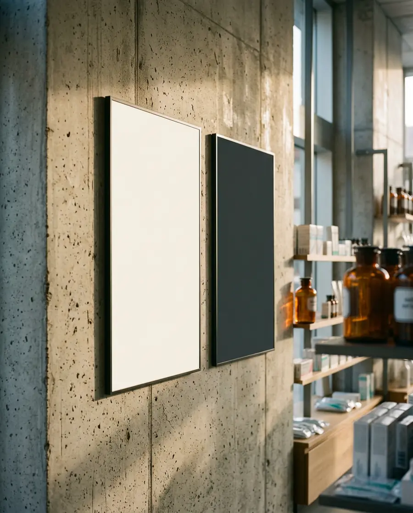
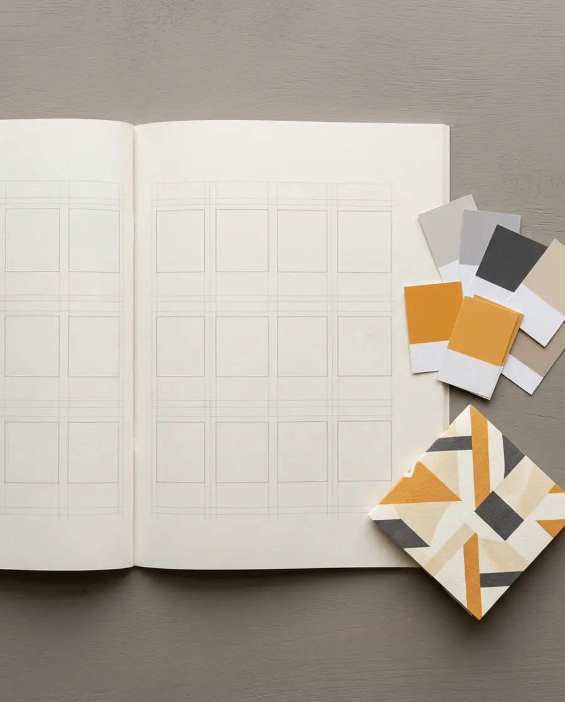
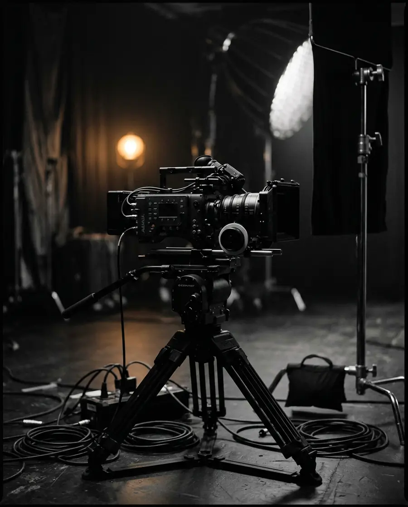

Selected archive
The work that didn't get a case study.
Nine years produces a great deal more than three brand systems. What follows is the rest of it, grouped by what it is rather than ranked — identities, campaigns, print, and the film work that sits alongside the design practice.
The thumbnails below stand in for real project visuals, and are deliberately unbranded. Each entry needs its own photography, client name and permission to publish before this page goes anywhere near a hiring manager.
Brand identities
30+ systems · 2016—2025
Marks, stationery and identity guidelines across pharmacy, clinical, laboratory and dental clients — the fourteen shown on the homepage strip among them.

Campaigns & advertising
Print · Point of sale · Social
Product launches and seasonal campaigns for pharmacy and parapharmacy, carried from concept through to the printed panel on the wall.

Brand systems & guidelines
Manuals · Grids · Colour logic
The documents that let a client's own team keep the system intact between projects — which is the difference between an identity and a one-off.

Film & motion
Direction · Head of department
Product films, brand films and motion work produced through Revolution Agency's filmmaking department.

Catalogues & flyers
Editorial · Medical communication
Product catalogues, range flyers and medical communication pieces — the material a sales team actually carries into a pharmacy.

Exhibition & environment
3D direction · On-site build
Trade-show stands taken from 3D visualisation through to the structure standing on the floor of the hall.